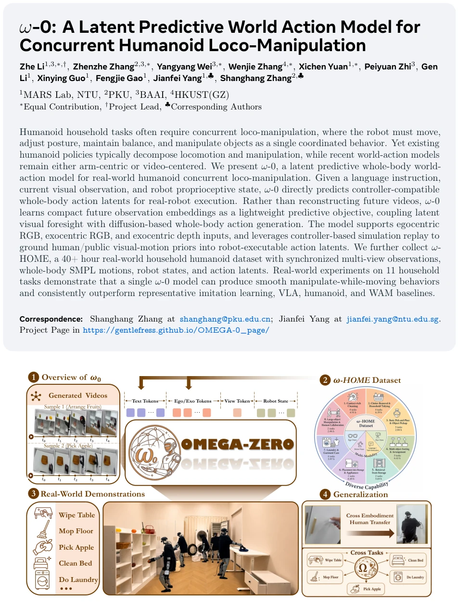
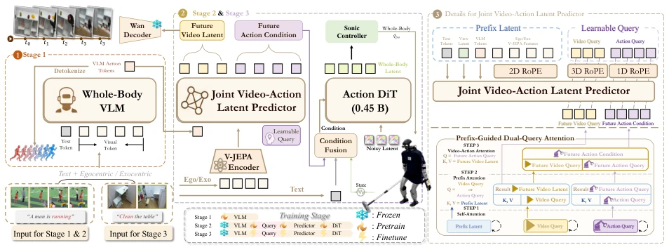
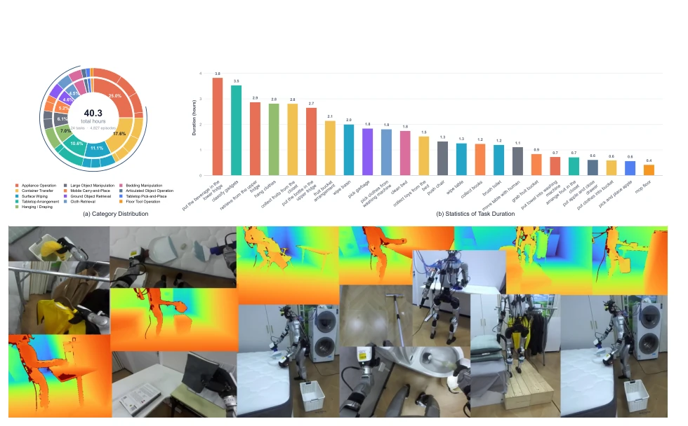
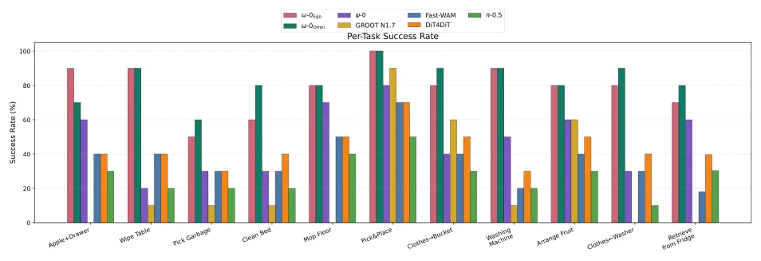
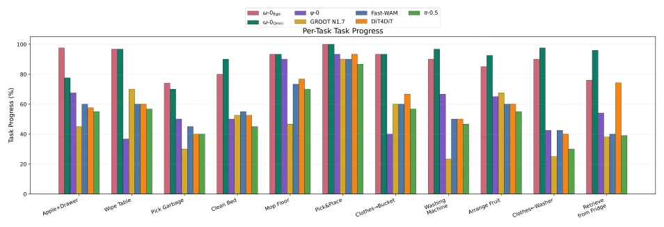
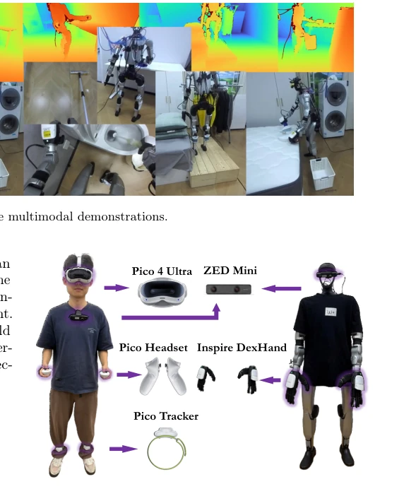
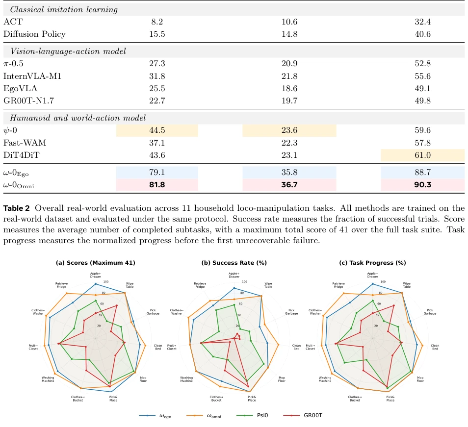
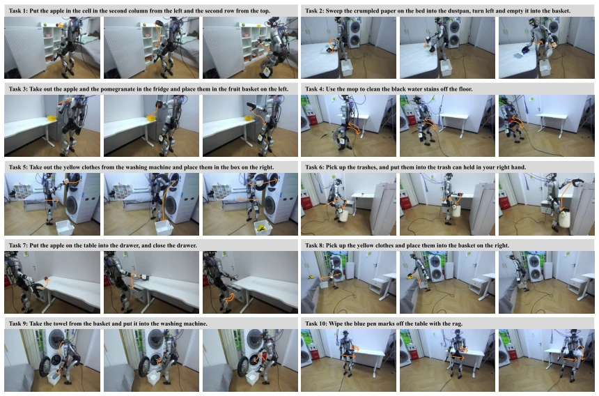
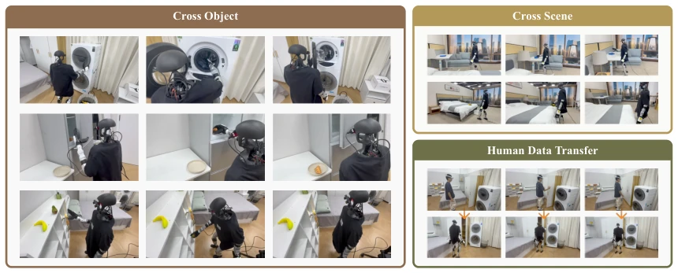

ω-0 试图用“潜空间预测”绕过视频生成的坑，这思路挺聪明，毕竟像素级视频预测在机器人身上容易翻车，且计算开销大。但依赖 SONIC 仿真回放把人类数据转成机器人动作，这步“翻译”难免有损耗，物理一致性全靠仿真器保证。数据集 ω-HOME 倒是实打实的 40 小时真机数据，比纯合成数据强，覆盖了多视角。不过，把人类视频转成机器人动作这事儿，本质上还是在做 domain gap 的缝合，真机表现虽好，但泛化到未见过的物理交互可能还得依赖仿真质量。总的来说，是个扎实的工程落地，解决了全身协调的痛点，但相比纯视频生成方法，其理论贡献在于证明了潜空间预测的有效性，而非架构创新。
ω-0 attempts to bypass the pitfalls of video generation using "latent space prediction", which is a clever idea, as pixel-level video prediction is prone to failure when applied to robots and incurs high computational overhead. However, relying on SONIC simulation replay to convert human data into robot actions means this "translation" step inevitably incurs loss, with physical consistency guaranteed entirely by the simulator. The dataset ω-HOME indeed consists of 40 hours of real robot data, superior to pure synthetic data and covering multiple viewpoints. However, converting human video to robot actions is essentially stitching together a domain gap; although real-world performance is good, generalization to unseen physical interactions may still depend on simulation quality. Overall, it is a solid engineering deployment that solves the pain point of full-body coordination, but compared to pure video generation methods, its theoretical contribution lies in proving the effectiveness of latent space prediction rather than architectural innovation.
研究动机Motivation
人形机器人做家务不能光靠手，还得脚动、腰扭，现有 VLA 多关注手臂操作 (Chi et al., 2025; Brohan et al., 2022)，或者把移动和操作分开处理，导致“边动边做”时协调性差。最近的 WAM 虽然引入了世界模型，但大多基于视频生成 (Zheng et al., 2026)，真机环境下视觉噪声大、遮挡多，视频预测不准会直接导致动作抖动。ω-0 想解决的是如何在不依赖高保真视频生成的前提下，利用未来视觉动态辅助全身动作生成。现有方法难以处理长程任务中的动态平衡与操作耦合，需要一种能直接预测控制器兼容动作的模型，而非中间的视频表征。
Humanoid robots doing housework cannot rely solely on hands; feet must move and the waist must twist. Existing VLAs mostly focus on arm manipulation (Chi et al., 2025; Brohan et al., 2022), or treat mobility and manipulation separately, leading to poor coordination during simultaneous locomotion and manipulation. Recent WAMs have introduced world models, but most are based on video generation (Zheng et al., 2026); in real-world environments, high visual noise and frequent occlusions mean inaccurate video prediction directly leads to action jitter. ω-0 aims to solve how to utilize future visual dynamics to assist full-body action generation without relying on high-fidelity video generation. Existing methods struggle to handle dynamic balance and operation coupling in long-horizon tasks, requiring a model that can directly predict controller-compatible actions rather than intermediate video representations.

Figure 1 Overview of ω-0 and the ω-HOME dataset. ω-0 generates whole-body action latents from language, multi-view observations, and robot states, while ω-HOME provides 40h of multimodal household humanoid demonstrations for training and evaluation.
方法Method
整体分三阶段。Stage 1 用 FAST tokenizer 把连续动作离散化，训练 VLM 学动作语义，将动作转为 token 序列。Stage 2 是关键，用 V-JEPA 提取未来视觉 latent，配合 Action DiT 生成动作 latent，通过双查询注意力机制耦合两者。这里没搞视频生成，只预测 latent embedding，省算力且稳。人类数据通过 SONIC 仿真回放转成机器人可执行的 action latents，解决数据稀缺。Stage 3 在 ω-HOME 上微调，引入 RTC 机制保证动作平滑。架构上用了 2D/3D/1D RoPE 区分不同 token 位置编码，挺细致。最终输出直接给 SONIC 控制器执行，形成闭环。
Overall divided into three stages. Stage 1 uses FAST tokenizer to discretize continuous actions, trains VLM to learn action semantics, converting actions into token sequences. Stage 2 is key, using V-JEPA to extract future visual latent, paired with Action DiT to generate action latent, coupling both through a dual-query attention mechanism. Here, no video generation is performed, only latent embedding is predicted, saving compute and ensuring stability. Human data is converted into robot-executable action latents via SONIC simulation replay, solving data scarcity. Stage 3 fine-tunes on ω-HOME, introducing RTC mechanism to ensure action smoothness. Architecturally, 2D/3D/1D RoPE is used to distinguish different token position encodings, which is quite detailed. The final output is directly given to the SONIC controller for execution, forming a closed loop.

Figure 2 Overview of ω-0. We first train a whole-body VLM for action-aware visual-language representation learning, and then use a joint video-action latent predictor to couple future visual latents with whole-body action generation. The predictor uses prefix-guided dual-query attention with token-specific positional encoding: 2D RoPE for visual prefix tokens, 3D RoPE for future video queries, and 1D RoPE for temporal action queries. The action DiT denoises SONIC-compatible whole-body action latents for real-world humanoid control, while the future visual branch provides lightweight latent supervision and optional visualization.
Used 40 hours ω-HOME dataset, 11 tasks. Baselines include ACT, Diffusion Policy, π-0.5, GR00T, etc. Metrics evaluate success rate, sub-task score, and task progress. Results show ω-0 outperforms baselines on all 11 tasks, especially long-horizon tasks (such as mopping, laundry) are more robust. Ablation experiments show simulation replay data indeed improves real-world performance. Generalization tests also demonstrate adaptability to new objects and scenes. Real-world experiments prove a single model can handle multiple tasks without task-specific policies, and action smoothness is significantly higher than comparison methods, validating the effectiveness of latent space prediction.

Figure 3 ω-HOME dataset statistics and representative multimodal demonstrations.

Figure 9 Per-task success rate comparison across seven models on 11 real-world household loco-manipulation tasks. Success rate is computed as the percentage of trials in which all progress stages of a task are completed.

Figure 10 Per-task task progress comparison across seven models. Task progress measures the normalized fraction of completed progress stages and provides a fine-grained view of partial task completion.
其他图片Other Figures

Figure 4 Real-robot teleoperation setup. We use a Pico 4 Ultra headset, handheld controllers, Pico trackers, and a ZED Mini camera to capture human head motion, hand commands, lower-body cues, and egocentric observations. The captured signals are retargeted to the humanoid with Inspire dexterous hands for whole-body loco-manipulation data collection.

Figure 5 Real-world task setup. We evaluate ω-0 on diverse long-horizon household loco-manipulation tasks involving whole-body motion, locomotion, tool use, articulated-object interaction, and dexterous manipulation. The task instruction is overlaid on each rollout sequence, and key sub-task progress is denoted with orange markers for better visualization. All rollouts are autonomously executed by the learned policy on the real humanoid.

Figure 6 Real-world task setup. We evaluate ω-0 on diverse long-horizon household loco-manipulation tasks involving whole-body motion, locomotion, tool use, articulated-object interaction, and dexterous manipulation. The task instruction is overlaid on each rollout sequence, and key sub-task progress is denoted with orange markers for better visualization. All rollouts are autonomously executed by the learned policy on the real humanoid.

Figure 7 Generalization and human-data transfer.We evaluate ω-0 on out-of-distribution objects and scenes, including novel object appearances, layouts, and household environments. We further fine-tune the model with human demonstration data and deploy it on the real humanoid, where it successfully completes the target tasks.